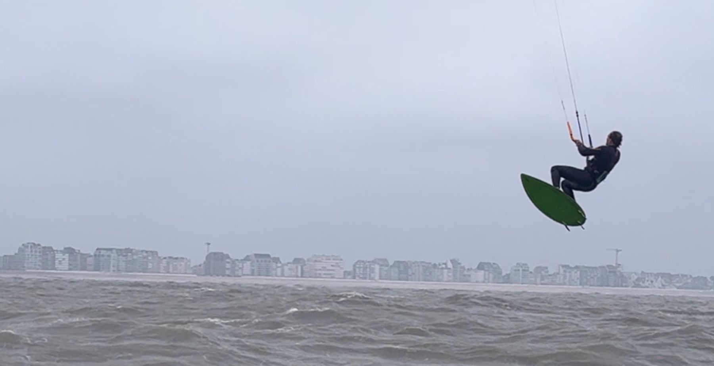
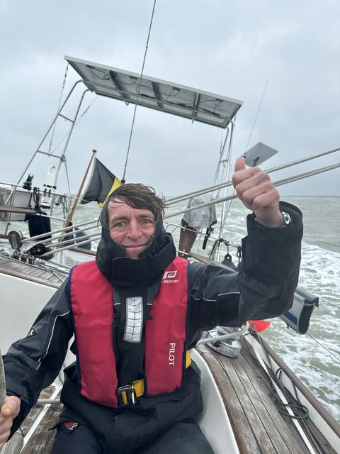

3 juni 2024
Fly-by op de Noordzee
Zaterdag 1 juni was weer een zalige Belgische lentedag, volledig bewolkt, af en toe een buitje en 6-7 Beaufort. Dankzij de aanhoudende noordenwind van de dagen ervoor, ook nog eens een deining van 3-4 meter op de Noordzee. Ideale omstandigheden voor de crew van etappe 5 (de oversteek!) om de zeebenen eens uit te testen en ook Nomad eens een beetje meer te pushen dan anders.



Geen andere zeilboot te bespeuren natuurlijk en Nomad & crew houden zich voorbeeldig in deze sportieve omstandigheden met snelheden tot 11kts SOG.
Maar het hoogtepunt van deze top-zeildag was ongetwijfeld, een paar mijl uit de kust, een onverwachte ontmoeting met een prettig gestoorde hele straffe gast.
Stocky op zijn best 💪😜.
Must-see video hieronder:
Waanzinnig 👏👏👏👊!
Dat de skipper voor het vertrek een luchthapper op het voordek was vergeten af te sluiten en dat die dan ook voornamelijk als zeer effectieve "waterhapper" gefunctioneerd heeft, vermelden we er volledigheidshalve even bij als "lesson learnt" 😱😱😢😜...